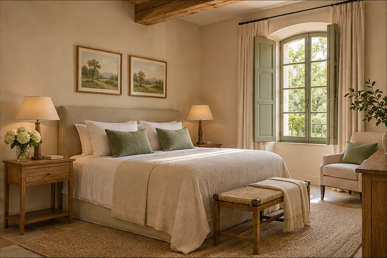
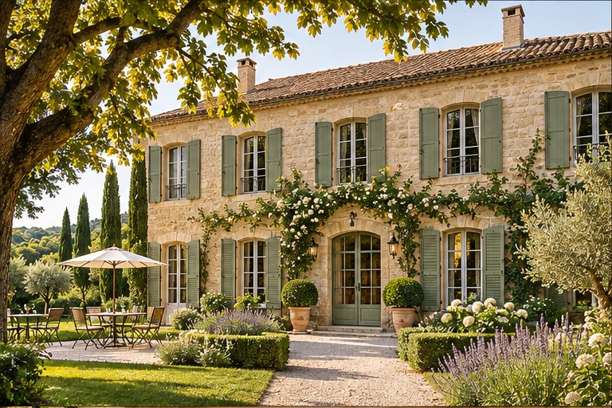
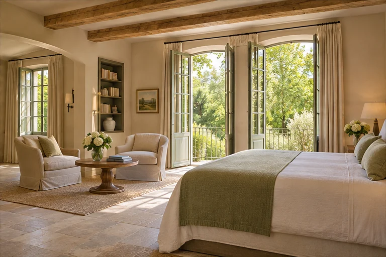
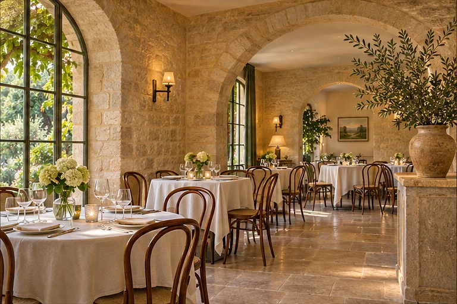

La chambre Jardin
24 m² · 2 personnes · Vue sur le jardin
Une maison, un jardin, du temps pour soi
Une chambre ouverte sur le jardin, une table de saison et le plaisir de ralentir. Bienvenue à Maison Avelune.
Découvrir notre maison ↓
Démonstration : calendrier et tarifs fictifs, de décembre 2025 à février 2026.
L'esprit de la maison
Des matières naturelles, une lumière douce et toute la place pour se sentir bien.

24 m² · 2 personnes · Vue sur le jardin

38 m² · 3 personnes · Coin salon
20 m² · 2 personnes · Côté cour
* Tarifs illustratifs du projet concept. Aucun séjour n'est commercialisé.

La table Avelune
Une cuisine imaginée autour du jardin et du marché, servie dans la douceur d'une maison de campagne.
Carte d'exemple pour cet établissement fictif.